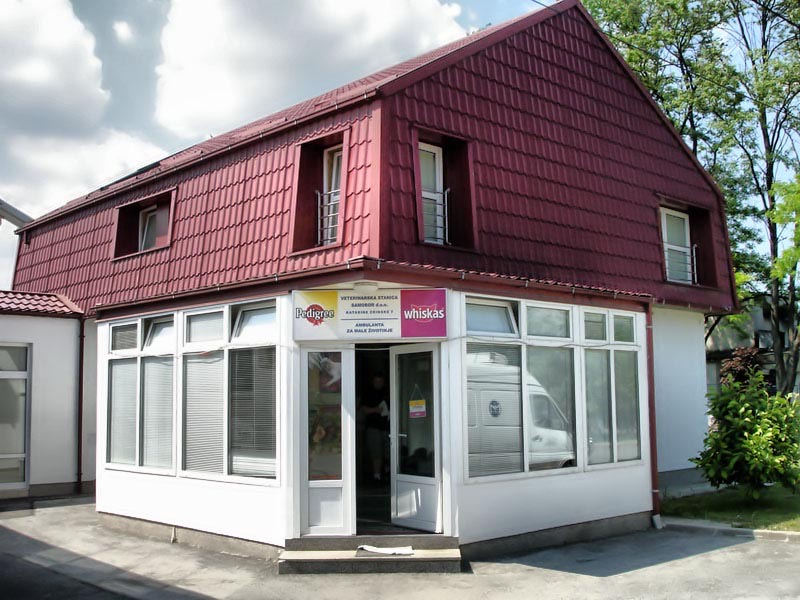
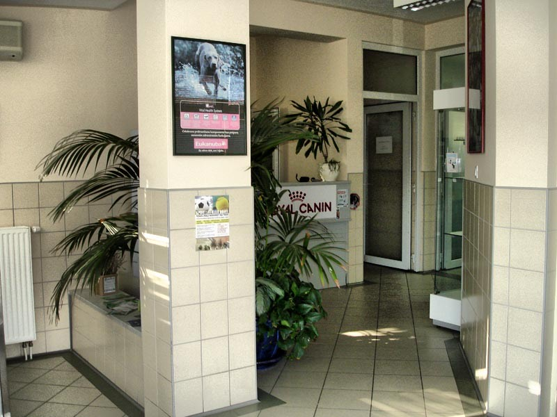
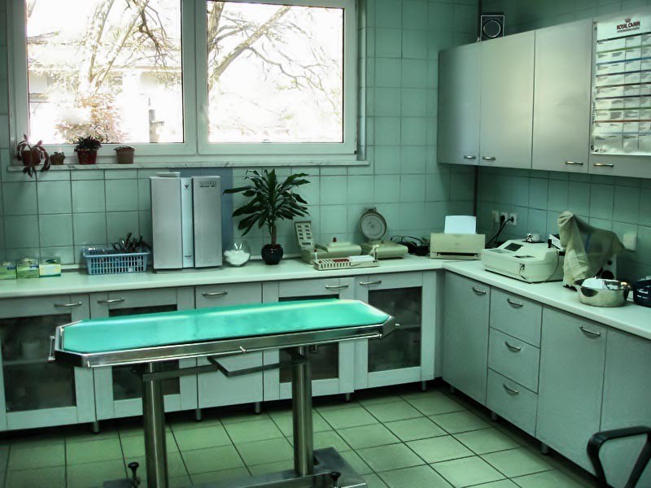
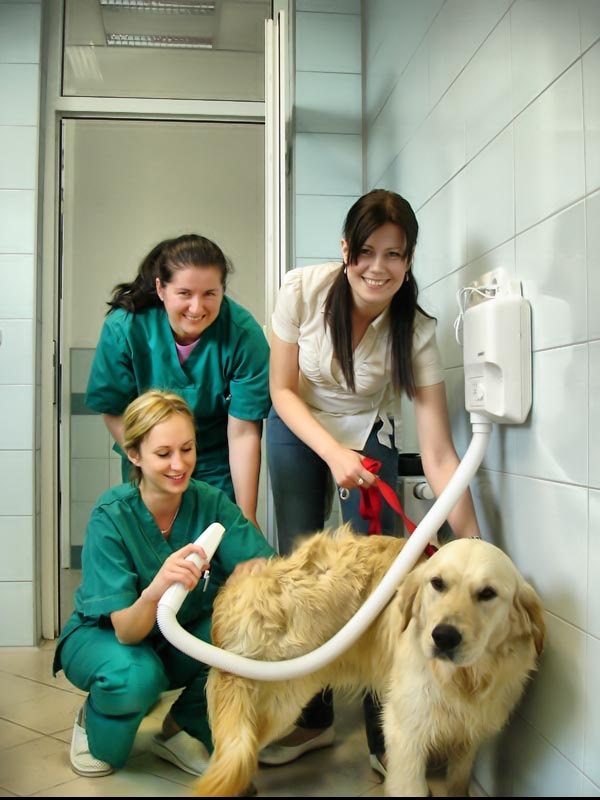
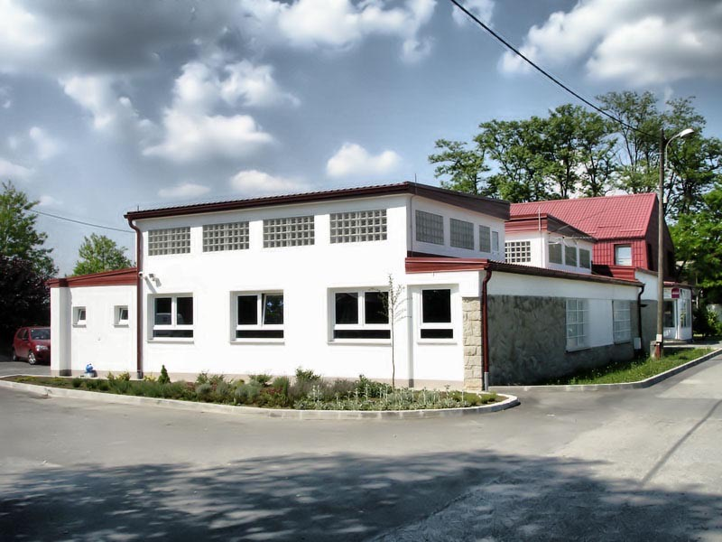

Od cijepljenja i preventivnih pregleda do kirurških zahvata, stacionarnog liječenja i hidrofizioterapije u bazenu s pokretnom trakom. Za pse, mačke, kuniće, tvorove, hrčke i ptice.
Hidrofizioterapijabazen s pokretnom trakom, voda 25–35 °C
EKG i ultrazvuku ambulanti
Cijepljenje protiv bjesnoćeInternistički preglediLaboratorij – hematologija i biokemijaEKG i ultrazvukSterilizacija i kastracijaČišćenje zubnog kamencaStacionarno liječenjeHidrofizioterapijaKunići, tvorovi, hrčci, pticeKućni posjetiCijepljenje protiv bjesnoćeInternistički preglediLaboratorij – hematologija i biokemijaEKG i ultrazvukSterilizacija i kastracijaČišćenje zubnog kamencaStacionarno liječenjeHidrofizioterapijaKunići, tvorovi, hrčci, pticeKućni posjeti
Tijelo u vodi teži manje nego na tlu, pa se pas kreće s manje boli. Vodeni pritisak smanjuje otekline, a otpor vode jača mišiće i srce. Koristimo prozirni bazen s pokretnom trakom kojoj se podešavaju brzina i trajanje rada.
Djelatnici ispred ulaza u ambulantu za male životinje, Katarine Zrinske 7.
KG
Kristina Guliš
dr. med. vet.
Diplomirala 1999. na Zavodu za kirurgiju, ortopediju i oftalmologiju. U Veterinarskoj stanici Samobor od pripravničkog staža; boravila u klinici za fizikalnu terapiju u Velikoj Britaniji.
NM
Nives Matijević
dr. med. vet.
U ambulanti za male životinje od siječnja 2005. Upisala poslijediplomski studij uzgoja i patologije egzotičnih kućnih ljubimaca.
AD
Ada Dekalić
dr. med. vet.
Diplomirala 2005. na Veterinarskom fakultetu u Zagrebu, a staž i rad nastavila u ambulanti za male životinje. Stručni ispit položila 2007.
MB
Martina Bašić
dr. med. vet.
Diplomirala 2005., u stanici od 2006. Upisala poslijediplomski studij patologije i uzgoja malih mesoždera.
Prostor
Ambulanta, čekaonica, ordinacija, bazen.

Ulaz u ambulantu

Čekaonica

Ordinacija

Nakon terapije

Veterinarska stanica
Prva pomoć za ljubimce
Trovanje, lomovi, krvarenje, gušenje, toplinski udar: osnovni postupci do dolaska veterinaru.